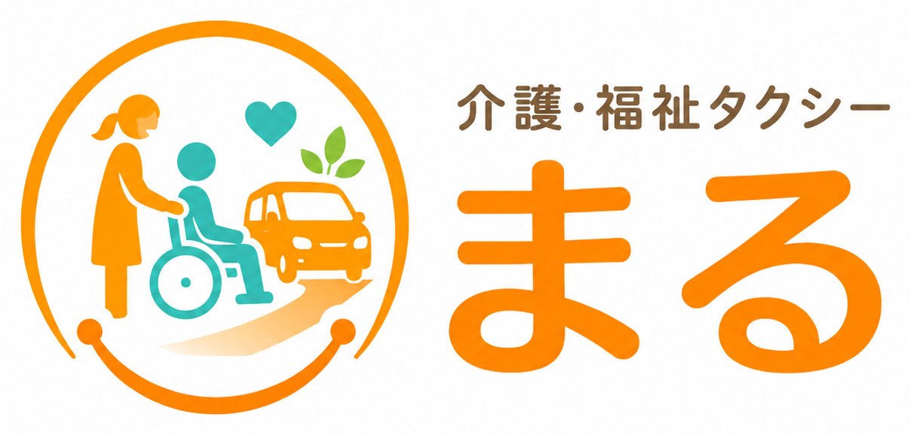
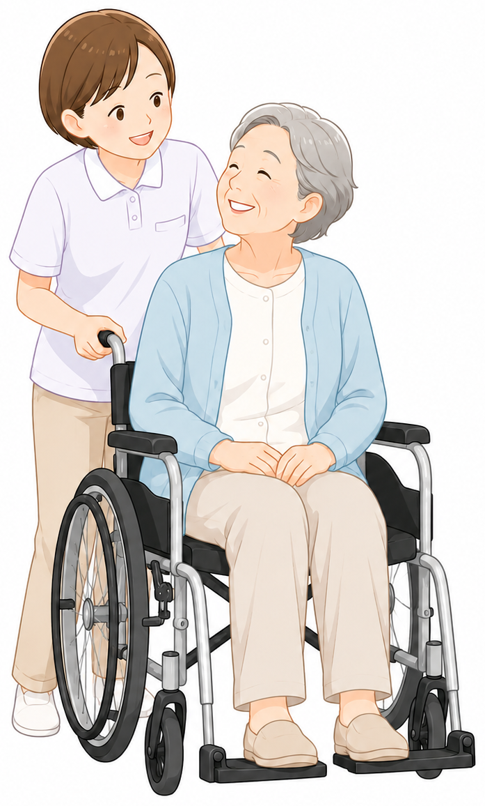
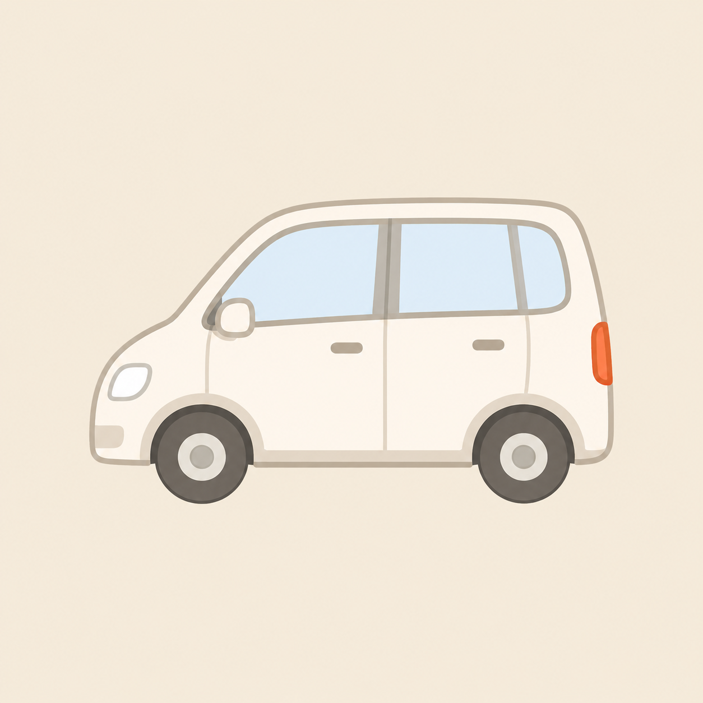
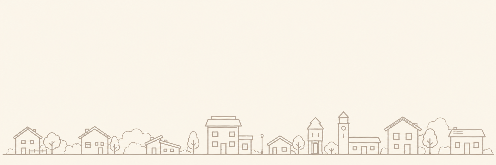

安心・安全
看護師資格を持つドライバーが、体調や状況に合わせて丁寧に対応します。

看護師の経験を活かした
安心・安全な移動サポート
通院やお買い物、冠婚葬祭やお出かけなど、
車いすの方や歩行が不安な方の
移動をやさしくサポートします。
ホームページを公開しました。
一覧を見る看護師としての現場経験から、移動の不安が日常の大きな負担になっていると実感してきました。
介護・福祉タクシーまるは、医療・介護の知識とやさしさを大切に、安心してご利用いただける移動サービスを提供します。

看護師資格を持つドライバーが、体調や状況に合わせて丁寧に対応します。
車いすのまま乗れるリフト付き車両で、快適・安全にご利用いただけます。
受付からお会計、院内の付き添いまで必要に応じてサポートします。
加美町・大崎市を中心に、宮城県内どこへでも柔軟に対応いたします。
お電話または
フォームから
ご連絡ください。
ご希望の日時・行き先を
お伺いします。

安全・快適に
目的地まで
サポートします。
病院内の付き添いなど
必要に応じて
サポートします。
ご予約の変更やご相談も、お気軽にご連絡ください。
| 初乗り運賃（1.5kmまで） | 700円 |
|---|---|
| 加算運賃（以降300mごとに） | 100円 |
| 時間制運賃（30分ごとに） | 3,000円〜 |
※介助料金・器材使用料など、別途かかる場合があります。
詳しくはお問い合わせください。
